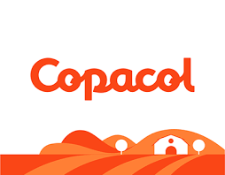
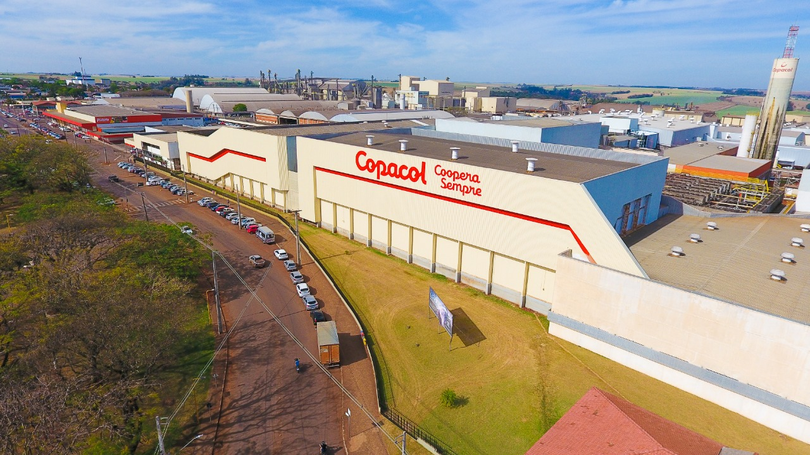
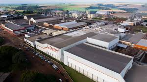
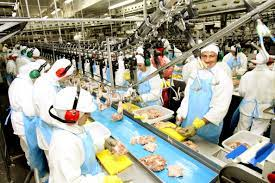
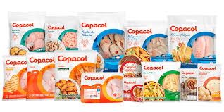

AGRINHO - DO CAMPO A CIDADE
COLHENDO OPORTUNIDADES!

Empresa Pioneira em Avicultura - COPACOL

Nossa historia
A Copacol (Cooperativa Agroindustrial Consolata) foi fundada em 23 de outubro de 1963 pelo Padre Luís Luise e mais 32 agricultores migrantes dos estados de Santa Catarina e Rio Grande do Sul. Na época, a Cooperativa surgiu com o objetivo de distribuir energia elétrica aos seus cooperados, mas seis anos depois, em 1969, foi desmembrada deste setor para atender especificadamente a agricultura, que se destacava na produção de feijão, arroz, milho e café.
Há 57 anos, a Copacol vem conquistando a preferência de milhares de consumidores de carne de frango e de peixe, em várias regiões do Brasil e também no exterior. Hoje, é uma das principais cooperativas brasileiras e referência na produção de alimentos, com foco na qualidade do produto e segurança alimentar dos seus clientes.
É evidente o crescimento da Cooperativa, fruto do trabalho conjunto dos cooperados, colaboradores, clientes e parceiros.


